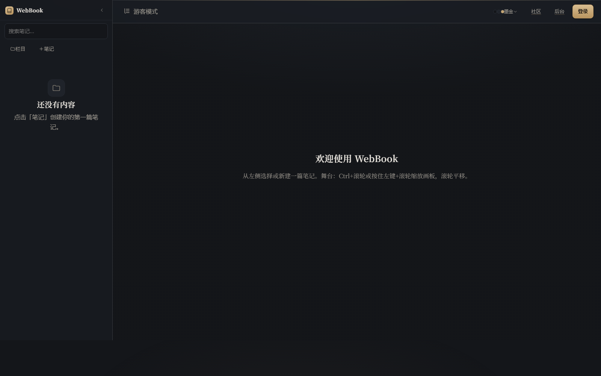
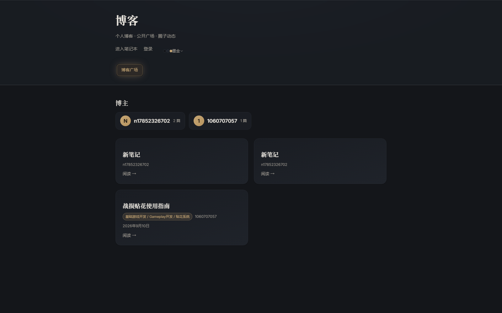
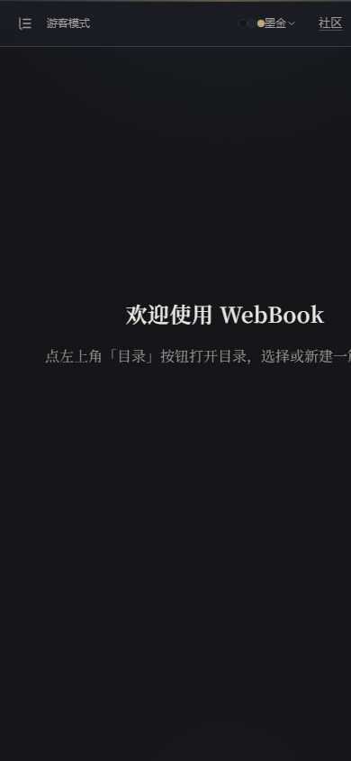
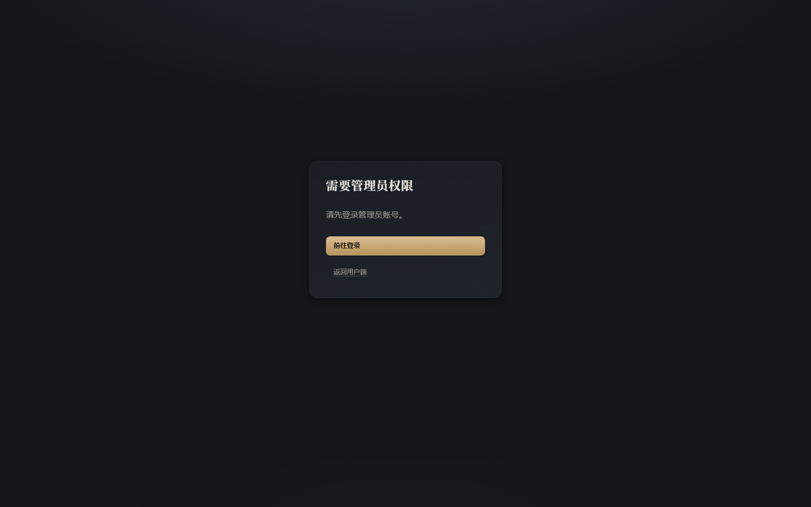
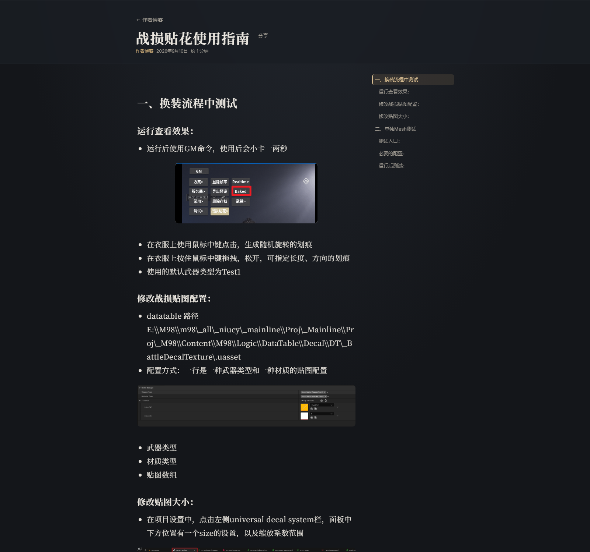
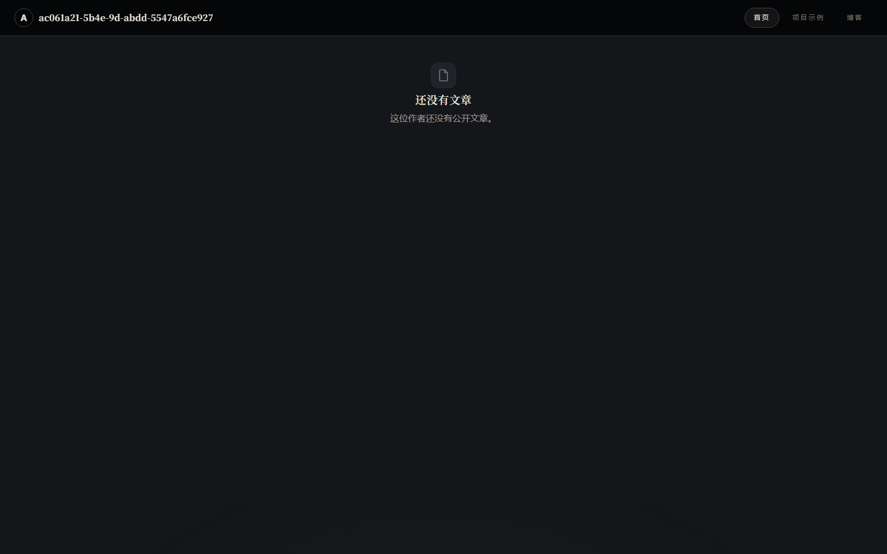
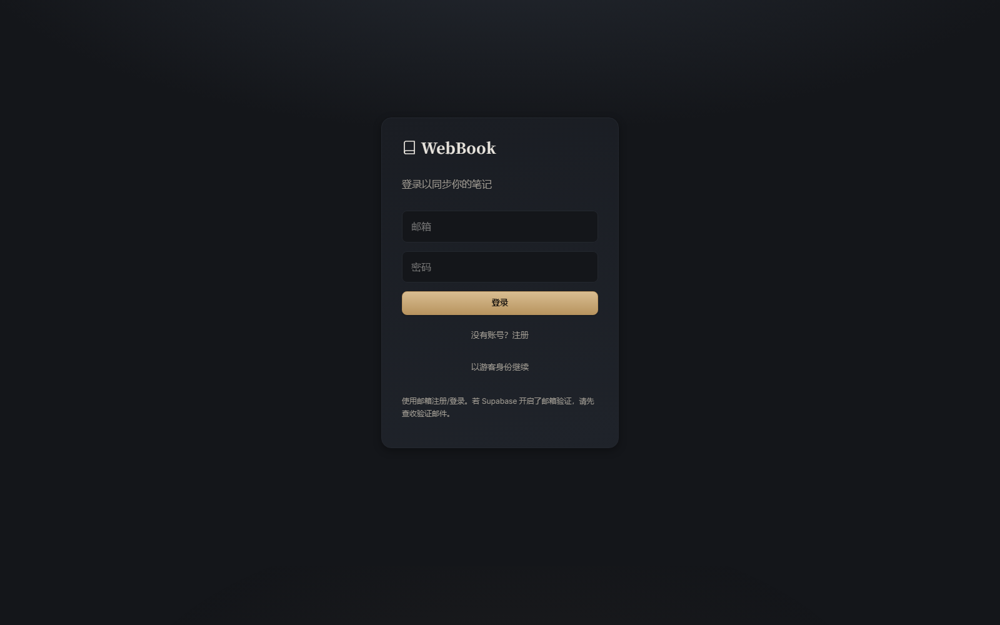

一体外壳：把五个小应用收成一个产品
上一轮（方向一 · 墨金）已经把皮肤统一了：一套 token、三套皮肤、53 个线性图标、画布去掉了冷蓝。 这一轮解决剩下的结构问题 —— 导航、首屏、留白节奏、零件一致性。 不新增颜色，不改数据模型。
一句话诊断
WebBook 现在是五个各带自己顶栏的小应用拼在一起：笔记本、博客广场、个人主页、圈子、后台。
它们共享了颜色，但没有共享导航 —— 14 个路由里只有 2 个走进 <AppShell>。
游客进「圈子」直接撞上登录页；顶栏 7 个平级按钮没有当前页高亮；手机端顶栏被挤空、首屏文字横向溢出被裁掉。
同时，第一次打开笔记本看到的是一片死灰色 —— 全屏 90% 是空的，只有两行提示字。写作工具最该做好的那一眼，现在是空白。
所以这一稿只做三件事
1. 一个外壳 左轨道（去处）+ 侧栏（内容）+ 情境顶栏，14 个路由全部走进来。
2. 一个首屏 把「欢迎使用 WebBook」换成真正的第一屏。
3. 一套零件 Dialog / Tabs / Skeleton / Empty / Toast 各一个，替掉 8+4+6 套实现。
确认后可以怎么落地
这份设计稿不是产品代码。确认后按这个顺序切，每步都能单独验收：
| P0 | 外壳骨架 新建 AppShell 的 rail + 顶栏变体，把 /blog、/app/circles、/admin 接进来 |
| P1 | 首屏 + 空态 + 加载态 替换 15+ 处裸「加载中…」，统一 EmptyState |
| P2 | 移动端 底部导航 + 悬浮新建（PRD U-03）+ 空态限宽 |
| P3 | 零件收口 Dialog 替 6 处 confirm；Tabs 4→1；清 🎨/✓ |
| P4 | 样式表瘦身 删掉 4 代首页残留（约 700–900 行死 CSS） |
现状实拍（这一稿的靶子）
全部来自你本机 localhost:5188 的 headless Chrome 实拍，非示意图。原图在 _before/。








五份设计稿
笔记本 · 一体外壳
左轨道 + 内容侧栏 + 情境顶栏；首屏（第一次打开）与笔记态两屏对照。
公开面 · 博客 / 个人主页 / 文章
共用外壳，内容从 760px 铺到 1180px；卡片自动封面；文章长路径不再溢出。
圈子与后台 · 同一外壳
去掉两套自造顶栏；游客不再撞登录墙；原生 confirm 换成设计系统 Dialog。
移动端 · 底部导航 + 悬浮新建
四屏：首屏 / 列表 / 悬浮新建展开 / 社区。修掉空态横向溢出。
零件收口
按钮 / 状态 / Dialog / Tabs / Skeleton / Empty / Toast —— 批准用的零件清单。
需要你拍板的四件事
Q1 · 导航放在哪儿？
现在是顶栏 7 个平级按钮。设计稿的方案是抽出一条 68px 左轨道，把「去处」和「内容」分开。
A 多占 68px 横向空间，换来 14 个路由一致的导航与明确的 active 态。B/C 更省空间，但「博客 / 圈子 / 后台」仍然藏在二级入口里。
Q2 · 首屏做成什么样？
现在是居中的两行灰字。设计稿给的是「标题 + 可直接聚焦的书写条 + 3 个动作 + 右侧快速开始」。
Q3 · 卡片要不要自动封面？
现在没有 cover 的笔记卡片只有文字，列表看起来是一片灰。
Q4 · 落地节奏
P0 外壳是其余全部的前置 —— 它一动，五个页面同时换脸。
顺带发现、但不属于美化范围
| 发现 | 证据 | 建议 |
|---|---|---|
| 个人主页读不到自己的公开文 | GET /api/public/users/ac061a21…/feed 返回 {"posts":[]}，而 GET /api/public/feed 里同一 ownerId 有 1 篇；且返回的 ownerEmail 等于 userId |
单独开 issue 定位（后端） |
| 舞台初始相机偏移 | 上一轮审计已记录：未拖动过的新笔记打开后正文偏到视口右侧之外，只看到半截 | 优先级高于本轮美化 |
| 样式表 4 代首页残留 | layout.css 5,675 行；domain-* / spotlight-* / marquee / masonry / io-hero-* / io-spot-* / io-home-* / io-discipline* 在 TSX 里零引用 |
P4 删除前先 grep 复核 |
| 孤儿页面 | pages/BlogPage.tsx（63 行）没有任何路由或组件引用它 |
随 P4 一起删 |
这一稿明确不动的
| 不动 | 原因 |
|---|---|
| 配色 | 墨金 / 纸墨 / 蓝图三套皮肤已经是确认过的方向，这一稿只把表面层级的差值拉开（相邻档 +6/255），色相一个不动 |
| 画布与连线 | 上一轮已从冷蓝改暖金，本轮只加自动封面与元信息排版 |
| 块编辑器内核 | 块 / 连线 / 相机 / 手势的数据模型与交互不改 |
| 数据与 API | 零 schema 改动、零 Worker 部署；自动封面是从已有 note.id 派生的 CSS，不是新字段 |
| 权限与可见性 | private 仍然返回 404。游客看到圈子列表是公开圈子，与现有 /api/public 能力一致 |